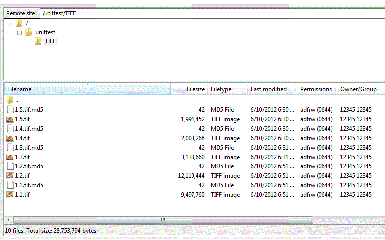

7 Preparing the submission package - Reference Documentation
Authors: Lucien van Wouw
Version: 1.3
Table of Contents
7 Preparing the submission package
When you prepare a submission package there are a number of questions to take into consideration. Namely:- who will have access to the administration panel ?
- who is responsible for the FTP upload of digital files ?
- what is to be preserved ? And what is to be presented ? Is there need for producing derivatives or will you supply these ?
- what is the access status for the particular files that are to be submitted ?
- will you supply your own persistent identifiers; or will you use allow the repository to create these ?
- is there any context you want to preserve such as file ordering
- create ftp accounts.
- set a profile. That is, defaults for the processing instruction such as access, mimetype, the prefered services to use
- define access policies
- oversee the production of instructions, starting procedures and monitor the status
- recreate past instructions
- download technical metadata of stored material
7.1 The staging area
Once you have selected the files intended for preservation and presentation you can upload these to the staging area. This is a work space where you can assemble your ingest package. Here you:- use ftp to upload files to temporary storage and rearrange these
- optionally upload a custom XML processing instruction
7.1.1 Connecting to the stagingarea
To connect to the staging area you need one or more ftp accounts. A CP administrator can use the Accounts section to manage these.FileZilla and WinSCP are known to work well with the staging area. To make a connection:- create an ftp-account
- set the host name of the staging area to the one mentioned in the ftp account confirmation e-mail
- set the ftp client to support an explicit FTP over TLS connection
- enable passive mode.
- The ftp port to use is the default 21.
7.1.2 Folder and file conventions
After a CP user (of course, ftp procedures can be automated also) logs in with a ftp-account, the first directory visible is the home directory. A FTP client will show this as a "/".The user should at least upload one main folder containing files (your dataset) in the home directory. This example illustrates the upload of a main folder called "unittest" and it contains a sub folder with 5 files.See there are 10 files ? For each file you upload to the staging area, the FTP server produces a md5 checksum. This is stored next to the file in the formatfilename.md5. The checksum it contains is compared the one you
deliver in a processing instruction in order to assert integrity. It contains something like this:
181c838e29cbb0602da4a160eece2217 1.1.tif
You should not delete automatically created md5 files. If you do; the ingest of your files can take a long time.
Any folder or file that starts with a dot, will be ignored by the ingest procedures. Also any digital file placed right in the home directory and not in a main folder will be ignored.
7.1.3 Supply custom derivatives
The object-repository has a service to create lower level copies of the masters. If you want you can add your own derivative material because it is of better quality or the type of derivative manufacturing is not supported.Conventional offerings
The position and names of the derivatives must follow conventions:- the root folder in which the derivative is placed must be called ".level1" or ".level2" or ".level3". Notice these names start with a dot.
- the derivative filename must be identical ( case sensitive ) to that of the master filename - excluding the file extension. For example, if the master is called
MyFile.tifforBigVideo.mpgthen the custom derivative must be positioned and named like/.level1/MyFile.jpgor/.level2/BigVideo.mpg - the derivative must be parallel to the master file.
- the extension of the derivative must be related to a known content type as indicated in this list. If you see that your derivative extension is not in this list, then make a feature request.
Example 1
A master is placed deep within some subfolders:/main_folder/b/c/d/myLargeFile.tiff
And the derivative file is called myLargeFile.pngThen a level1 derivative can be placed anywhere by inserting a .level1 folder thus:
/main_folder/b/c/d/.level1/myLargeFile.png/main_folder/b/c/.level1/myLargeFile.png/main_folder/b/.level1/d/myLargeFile.png/main_folder/.level1/c/d/myLargeFile.png
/main_folder/b/c/.level1/myLargeFile.png/main_folder/b/.level1/d/myLargeFile.png/main_folder/.level1/c/d/myLargeFile.png
Example 2
A master is placed in the main folder/mydataset/myVeryLargeMovie.mpg
Then we offer both level1, level2 and a level3 file like this:
/mydataset/.level1/myVeryLargeMovie.mpg/mydataset/.level2/myVeryLargeMovie.mpg/mydataset/.level3/myVeryLargeMovie.mpg
The derivative service will first look a custom derivative. If it does not find a one, it will attempt to produce it
Supplying derivatives some time after an ingest
To add custom derivatives after the ingest is completed, you follow the same procedure:- upload your custom derivative files according to the location convention
- in case your instruction gives validation warnings on absent master locations: disable and save the plan's master and any other non-related derivative tasks. Then validate the instruction
- Start processing your files.
In case you re upload for the sake of ingesting custom derivatives, the location element need not be the same as the original master files from a previous instruction.
7.2 Setting the Process instruction
The administration interface and an XML processing instruction together makes it all work. An instruction has required and optional values. Those values can be set at three levels:1. Profile
Via the administration interface select profile. Default instruction settings can be placed there by a CP administrator. It makes sense therefore, to set all your broad access policies and most frequently used file content values here. Settings in the profile substitute any absent values in the XML processing instruction.2. instruction.xml
The instruction.xml is a XML document. It's main element is namedinstruction and contains attributes identical to
those you set in the profile. Any setting here will override those in the profile. Typically you would set values that
are exceptions to the more global general situation.Each main folder ought to contain an XML document. However with automated creation of instructions you need no XML.3. Stagingfile
In the instruction.xml's child elements one should mentionstagingfile elements. A stagingfile element represents the
file and any settings here will override those in the main element and profile. The stagingfile is the only element that has some unique settings not present in the profile or instruction, such as md5,
location and pid value.In short
Profile settings provide reasonable defaults for an organizations processing instruction. Instruction settings in an instruction.xml document override profile values and provide specific defaults for stagingfiles. Stagingfile settings in their final turn override instruction and profile settings. The smallest always win.7.2.1 Start an ingest
Starting an instruction can be automated, provided the conditions are right:- a FTP client has uploaded files
- a valid XML processing instruction is in a main folder; or you automatically created one via the administration's instruction panel
- If you had set the element ( in either the XML document itself or if not, at the profile panel ) :
autoIngestValidInstruction=trueautoIngestValidInstruction a manual ingest command is needed. From the administration interface select Process instruction to start.The manual option to Process an instruction will not appear until the instruction is considered valid.
7.2.2 The instruction as a XML document
A XML processing instruction should be:- named
instruction.xml - placed in the main folder of the uploaded dataset.
- well formed XML. There is no schema validation. The schema can be found here
unittest then you must add the instruction.xml document in the folder unittest as well: This file will be deleted automatically after you uploaded it, as it is read into a database. You can re upload the
instruction any time you want. Or download it from the database back to your local PC or the staging area main folder
using the administration panel.
This file will be deleted automatically after you uploaded it, as it is read into a database. You can re upload the
instruction any time you want. Or download it from the database back to your local PC or the staging area main folder
using the administration panel.When you download a XML processing instruction, it may have added validation messages.
Working example of an XML instruction
Lets say we automatically create an instruction via the administration panel for the five files we just uploaded. On the instructions page we edit the settings and indicate the following:| element | value |
|---|---|
| Label | My five files |
| Action | upsert |
| Access | open |
| ContenttypeMimetype | image/tiff |
| Auto generate PIDs | filename2pid |
| Auto ingest valid instructions | off |
| Resolver baseUrl | http://hdl.handle.net/ |
| Service to execute | all |
<?xml version="1.0" encoding="utf-8"?> <!--Instruction extracted on 11 Jun 2012 11:05:15 GMT--> <instruction xmlns="http://objectrepository.org/instruction/1.0/" access="open" action="upsert" autoGeneratePIDs="filename2pid" contentType="image/tiff" label="My five files" resolverBaseUrl="http://hdl.handle.net/"> <stagingfile> <pid>12345/1.1</pid> <location>/unittest/TIFF/1.1.tif</location> <md5>181c838e29cbb0602da4a160eece2217</md5> </stagingfile> <stagingfile> <pid>12345/1.3</pid> <location>/unittest/TIFF/1.3.tif</location> <md5>efac78a3f9bc224b581bd9e6003813e3</md5> </stagingfile> <stagingfile> <pid>12345/1.4</pid> <location>/unittest/TIFF/1.4.tif</location> <md5>b2d09024f5c5c9b823ec614a7d7bc8d0</md5> </stagingfile> <stagingfile> <pid>12345/1.5</pid> <location>/unittest/TIFF/1.5.tif</location> <md5>4daae1f298383d440f725f195621cebf</md5> </stagingfile> <stagingfile> <pid>12345/1.2</pid> <location>/unittest/TIFF/1.2.tif</location> <md5>5eaea136b6e49f2dabff2f8f1a278d7c</md5> </stagingfile> </instruction>
Validation
An automatic validation procedure will run the moment youautocreate an instruction or ftp one into the main folder.
The results of the validation will show up in the CP administration interface per instruction and per file. In addition,
downloading the file via the CP administration interface will give you the XML instruction with error elements if any.
After you correct the issue, you can reupload the XML processing instruction and files where needed.Viewing and changing the XML instruction after upload
All the uploaded datasets's main folders are visible at the instructions page of the administration interface. There the instructions and stagingfile elements can be tweaked. This feature is locked after ingest.Autocreate an XML processing instruction?
It can be useful when you make your own custom instructions. You can use this feature to experiment to see how a valid instruction looks like. Should your PID or LID values be identical to the filenames, you could produce an instruction that is perfect for ingest.Two more examples of an XML processing instruction
Example with pid elements.
Lets us assume a folder structure of one main folder with five fileshome-directory: /
/folderA
/folderA/Apple.tiff
/folderA/Pear.tiff
/folderA/Banana.tiff
/folderA/Potato.png
/folderA/SecretRecipe.tiffaction=upsert
access=closed
contentType=image/tiff- the
contentTypefor the potato ? It is not a tiff but an image/png. - And we feel the
accessof the policy is too strict. Lets set it all to open. - And lets set the
accessto SecretRecipe.tiff to restricted.
<?xml version="1.0" encoding="UTF-8" standalone="yes"?> <instruction xmlns="http://objectrepository.org/instruction/1.0/" access="open"> <!-- access added here --> <stagingfile> <pid>12345/a</pid> <location>/folderA/Apple.tiff</location> <md5>cf3ee1101d19328145e94da1cade45bd</md5> </stagingfile> <stagingfile> <pid>12345/b</pid> <location>/folderA/Pear.tiff</location> <md5>f57eb0e65d11a5a73eab9d5dddf1e528</md5> </stagingfile> <stagingfile> <pid>12345/c</pid> <location>/folderA/Banana.tiff</location> <md5>c741cd201fafb15c5ec874ae16738671</md5> </stagingfile> <stagingfile> <contentType>image/png</contentType> <!-- contentType here --> <pid>12345/d</pid> <location>/folderA/Potato.png</location> <md5>c741cd201fafb15c5ec874ae16738671</md5> </stagingfile> <stagingfile> <access>restricted</access> <!-- access element here --> <pid>12345/e</pid> <location>/folderA/SecretRecipe.tiff</location> <md5>c741cd201fafb15c5ec874ae16738671</md5> </stagingfile> </instruction>
Example with lid elements
As a second example, lets suggest you are a content producer that can not supply persistent identifiers but only supply local identifiers. Lets also assume that you made things easy and the local identifiers can be derived from the filenames but without the extension. Here we can automatically create an instruction.this example would only work in the object repository when it can fall back on a Handle System compatible PID webservice for which a naming authority is required. In the example we assume this so and the authority is 12345.Lets say these are the files in the staging area:
home-directory: /
/folderA
/folderA/Apple.tiff
/folderA/Pear.tiff
/folderA/Banana.tiff
/folderA/Potato.tiff
/folderA/FreeRecipe.tiffaction=upsert
access=closed
contentType=image/tiff
autoGeneratePIDs='filename2lid'<?xml version="1.0" encoding="UTF-8" standalone="yes"?> <instruction xmlns="http://objectrepository.org/instruction/1.0/"> <stagingfile> <lid>12345/Apple</lid> <location>/folderA/Apple.tiff</location> <md5>cf3ee1101d19328145e94da1cade45bd</md5> </stagingfile> <stagingfile> <lid>12345/Pear</lid> <location>/folderA/Pear.tiff</location> <md5>f57eb0e65d11a5a73eab9d5dddf1e528</md5> </stagingfile> <stagingfile> <lid>12345/Banana</lid> <location>/folderA/Banana.tiff</location> <md5>c741cd201fafb15c5ec874ae16738671</md5> </stagingfile> <stagingfile> <lid>12345/Potato</lid> <location>/folderA/Potato.tiff</location> <md5>c741cd201fafb15c5ec874ae16738671</md5> </stagingfile> <stagingfile> <lid>12345/FreeRecipe</lid> <location>/folderA/FreeRecipe.tiff</location> <md5>d241cd201fafb15c5ec874ae167386ee</md5> </stagingfile> </instruction>
7.2.3 Instruction settings
You can manage the ingest of your files by setting the instruction's elements. As these configurations can be placed at different levels ( profile's, XML instruction's and stagingfile's ) we mention that between brackets.To begin with: a friendly description
label (profile and instruction element)A human readable bit of information. This will show up on the administration
interface when viewing your instructions.Choose the services
plan (profile and instruction)Determines what services are to be used ( in no particular order ). Seperated by a comma.To tell you want a master ingest or update:
plan='StagingfileIngestMaster'
plan='StagingFileBindPIDs'
pidwebserviceEndpoint and pidwebserviceKey set.To call the PID webservice to bind the persistent identifier of a compound identifier ( objid ):
plan='StagingFileBindObjId'
pidwebserviceEndpoint and pidwebserviceKey set.To produce derivatives:
- @plan='StagingfileIngestLevel1'
- @plan='StagingfileIngestLevel2'
- @plan='StagingfileIngestLevel3'
plan='StagingfileIngestMaster,StagingFileBindPIDs,StagingFileBindObjId,StagingfileIngestLevel1,StagingfileIngestLevel2,StagingfileIngestLevel3'
Additions and updates
action (profile, instruction and stagingfile elements)This controls how the ingest and dissemination procedures handles the file. The default 'upsert' is the most simple
to use as it covers most use cases. action='upsert' ( default )action='add'
action='update'
action='delete'
Access policy
access (profile, instruction and stagingfile elements)Determines which dissemination policy to use when anonymous users want to view a level1, level2 or level3 derivative.
There are three out-of-the-box policies available: All derivatives are viewable to the world:
access='open'
access='restricted'
access='closed' (default)Access policy with embargo
embargo (profile, instruction and stagingfile elements)embargoAccess (profile, instruction and stagingfile elements, default: closed)The embargo is a date with the format [yyyy-MM-dd]. It will enforce an alternative access policy as defined in the
embargoAccess element.Some examples:
access | embargo | embargoAccess | policy enforced |
|---|---|---|---|
| open | 2010-12-01 | restricted | On 2009-12-01 the resource has restricted access |
| open | 2010-12-01 | restricted | On 2011-12-01 the resource has open access |
| open | 2010-12-01 | On 2009-12-01 the resource has closed access | |
| open | 2010-12-01 | On 2011-12-01 the resource has open access | |
| closed | 2010-12-01 | open | On 2009-12-01 the resource has open access |
| closed | 2010-12-01 | open | On 2011-12-01 the resource has closed access |
The compound object identifier and ordering of files
objid (instruction, stagingfile; empty by default)Groups all the files declared the instruction; stating they all belong to the same compound.
The syntax of this file is the same as any PID element.seq (stagingfile; 1 by default)
Typically when using the objid; you would express the order for each stagingfile with the seq element. If you
do not specify the order; the alphabetical ordering of your staged files will determine that sequence value.pdfLevel ( profile, instruction; 'level2' by default )
Determines which derivative level shall be used to render a PDF with. This level must consist of images.Mimetype
contentType (profile, instruction and stagingfile elements)The value indicates the nature of the file ( like "image/jpeg", "application/pdf , etc)Make sure your mimetype is correct or else the derivative creation or rendering may not go quite according to plan.For more on mimetypes see:
- http://en.wikipedia.org/wiki/MIME
- some good examples at http://www.ltsw.se/knbase/internet/mime.htp
- The object-repository has a list at https://github.com/IISH/object-repository-scripts/blob/master/shared/contenttype.txt of content types.
Checksum
md5 (stagingfile element)Used to determine if the transport from one place to another (the staging area; the document database) was in deed
without flaw.File location
location (stagingfile element)The case sensitive path and filename of the digital file. The beginning of the path is the same as the home directory.The persistent identifier
pid (stagingfile element)The object-repository needs the PID (e.g. a piece of string that can be resolved via Handle System, Ark, DOI) without the base URL, for example like:
<pid>12345/mypid</pid> <pid>hdl:12345/mypid</pid> <pid>ark:/12345/654xz321</pid> <pid>10.12345/jmbi.1998.2354</pid> <pid>doi:10.12345/jmbi.1998.2354</pid>
When unable to provide a pid value, use the optional substitute lid stagingfile element.Set a PID resolver base url
resolverBaseUrl (profile and instruction element)The resolver is a website that will know what to do with the PID. So if the PID is attached to the resolverBaseUrl we
ought to have a complete, workable url. This is used at the dissemination end of the object-repository to offer a link
for the enduser.For example, for
<pid>12345/mypid</pid>
and
resolverBaseUrl='http://hdl.handle.net/'the complete link on the dissemination interface would become: http://hdl.handle.net/12345/mypidThe optional 'lid' identifier
This element is a system (your local organization's system that is ) wide unique identifier. For example a LIS number or database key. Usage of this substitute is only needed if you are unable to supply and manage your own PIDs. You ought to have a PID webservice account to use the LID-PID substitute.When you submit a LID; the PID webservice will generate a PID value and insert it into the instruction. Any update afterwards with the same LID will return this PID.The PID webservice
pidwebserviceEndpoint: the endpoint or url of a PID webservicepidwebserviceKey: the webservice key that belongs to your account at the PID webserviceThese two settings combined are required to bind the PIDs to the object-repository's resolve URLs.Automated PID creation
autoGeneratePIDs (profile and instruction element)Is trickered by the administration interface autoCreate instruction and upload instruction commands. autoGeneratePIDs='none' (default)autoGeneratePIDs='uuid'
<pid>12345/10997FB2-1BFD-4191-A7E2-1AA1308960BB</pid> autoGeneratePIDs='filename2pid'
MyLargeFile.tif will lead to <pid>12345/MyLargeFile</pid> autoGeneratePIDs='filename2lid'
MyLargeFile.tif will lead to <lid>12345/MyLargeFile</lid> autoGeneratePIDs='lid'
Automatic ingest ( for automated batch procedures )
autoIngestValidInstruction (profile and instruction element)If set to autoIngestValidInstruction='true'Replacing derivatives
replaceExistingDerivatives (profile, instruction and stagingfile element)
Used in combination with a plan that creates derivatives.
When set to false ( default ) your derivatives will be replaced by newly master converted ones.Custom derivatives will always be ingested, regardless of this setting.
E-mail notifications
notificationEMail
This value is a comma delimited list of e-mail addresses. When an instruction is completed, it will sent a message
to those e-mails
7.2.4 Files and Compound objects
Compound objects are abstractions of ordered files. The way you express a compound object is through the processing instruction. Here you determine:- the pid value to refer to a group of files
- the physical file order
Expressing objid and order of files
The compound object has a persistent identifier. In the instruction this is set with the element objid This is a PID just like the PIDs you supply to identify your files with.In addition each individual file in the instruction may be given an order using the element seq.As an example, take the situation where you offer a three page letter. You place it onto the staging area:home-directory: /
/folderA
/folderA/page_0001.tiff
/folderA/page_0002.tiff
/folderA/page_0003.tiff<?xml version="1.0" encoding="UTF-8" standalone="yes"?> <instruction xmlns="http://objectrepository.org/instruction/1.0/" objid="12345/my-object-id"> <stagingfile> <pid>12345/my-identifier-a</pid> <seq>1</seq> <location>/folderA/page_00001.tiff</location> <md5>cf3ee1101d19328145e94da1cade45bd</md5> </stagingfile> <stagingfile> <pid>12345/my-identifier-b</pid> <seq>2</seq> <location>/folderA/page_00002.tiff</location> <md5>f57eb0e65d11a5a73eab9d5dddf1e528</md5> </stagingfile> <stagingfile> <pid>12345/another-identifier-c</pid> <seq>3</seq> <location>/folderA/page_00003.tiff</location> <md5>c741cd201fafb15c5ec874ae16738671</md5> </stagingfile> </instruction>